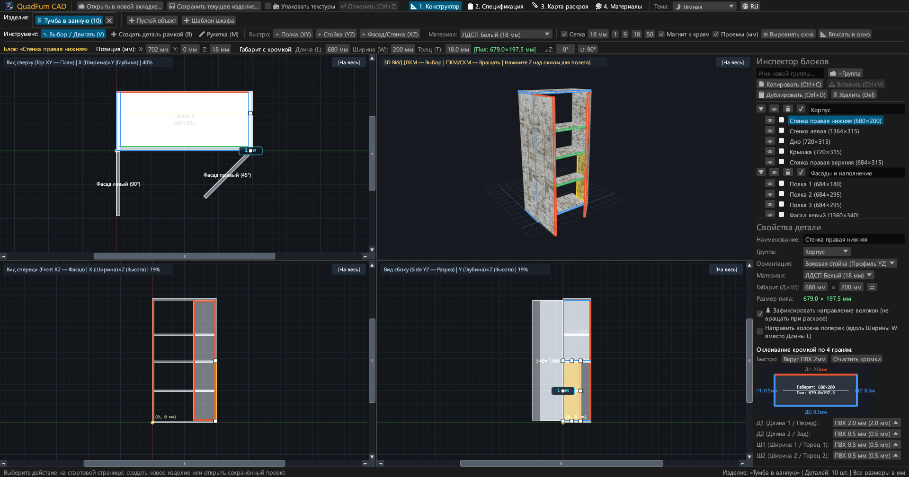
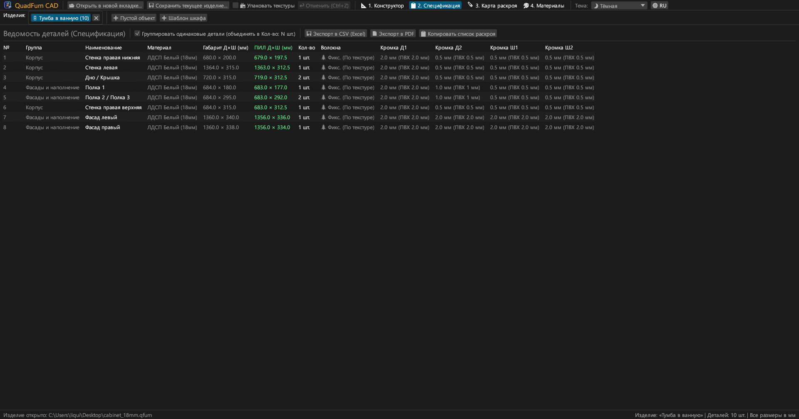
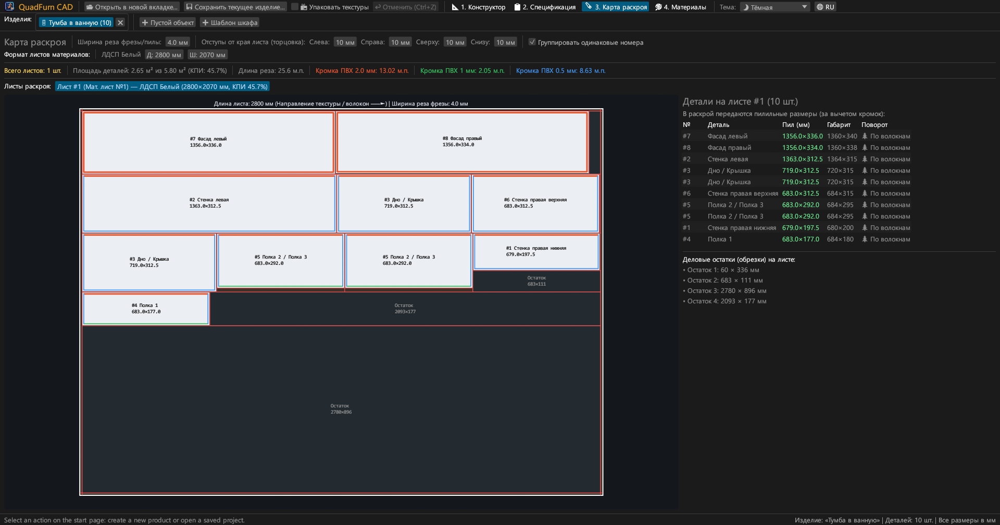
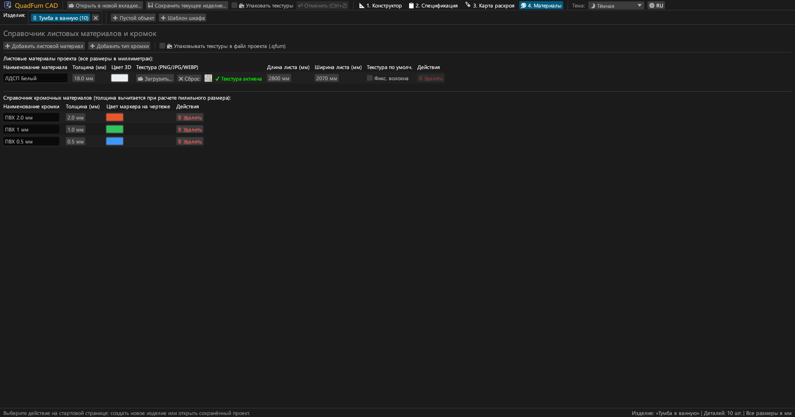
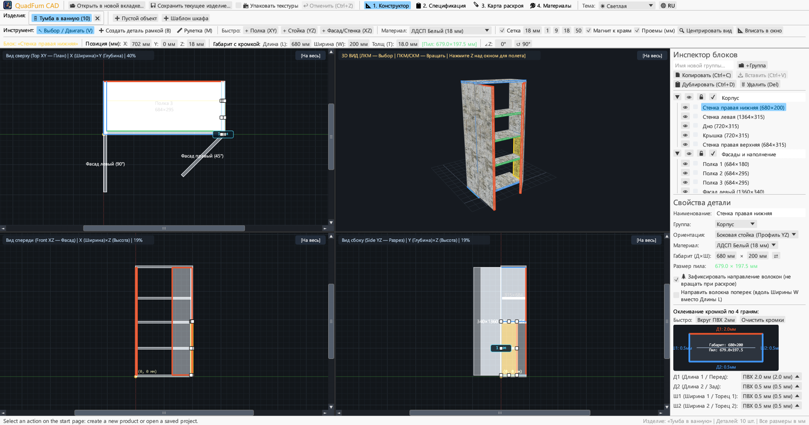
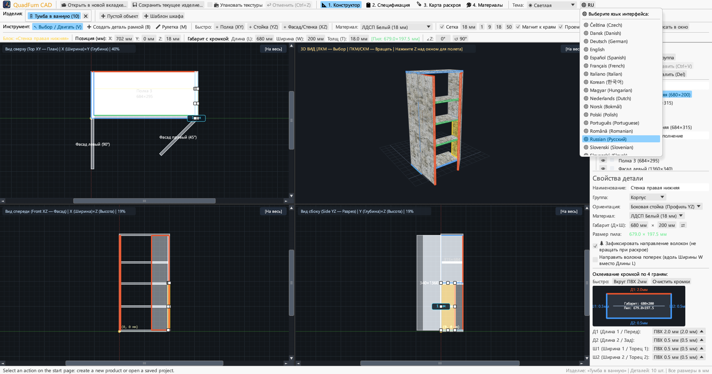

Быстрый CAD для мебельщиков. Синхронное 4-видовое моделирование, автоматический вычет кромки и раскрой плит — доступен онлайн в браузере и на компьютере.

Объединяет черчение в 4 проекциях, точное числовое позиционирование и оптимизацию карт раскроя в едином приложении.
Одновременная работа в трех ортогональных проекциях (Сверху XY, Спереди XZ, Сбоку YZ) со скроллбарами, магнитной привязкой и интерактивным 3D-окном.
Мгновенный ввод числовых координат (X, Y, Z), габаритов (Д × Ш × Т) и угла (∠Z) со встроенным калькулятором: ввод 600-4 или (800-36)/2 прямо в поле.
Назначение кромки ПВХ/АБС (0.4–2.0 мм) на любую из 4 граней (Д1, Д2, Ш1, Ш2) с мгновенным расчетом точных пилильных размеров для форматно-раскроечного станка.
Быстрый движок раскроя с учетом направления текстуры дерева, ширины пропила пилы, отступов обрезки краев листа и учета полезных деловых остатков.
Работа с несколькими проектами одновременно во вкладках. Копирование и вставка деталей между изделиями с автоматическим переносом материалов и кромок.
Экспорт готового к печати альбома A4 Альбомная: спецификация, чертежи 4 проекций, карты раскроя листов и сводная ведомость материалов и кромок с запасом +15%.





Полностью автономные бинарные файлы без внешних зависимостей.
Портативный исполняемый файл с иконкой, не требует установки.
sudo apt install ./quadfurn_0.2.4_amd64.deb
Универсальный бандл QuadFurn.app для Apple Silicon (M1–M4) и Intel x86_64.
| Клавиша | Действие | Область |
|---|---|---|
| V | Инструмент Выбор / Сдвиг (перемещение, 8 маркеров размера, рамка выделения) | 2D-проекции |
| B | Создать деталь рамкой (растягивание прямоугольника в текущей плоскости) | 2D-проекции |
| M | Линейка (замер точных расстояний ΔX, ΔY, L в миллиметрах) | 2D-проекции |
| Z | Режим полета от первого лица (Noclip с управлением WASD + мышью) | 3D-окно |
| ← → ↑ ↓ | Сдвиг выбранных деталей на шаг сетки (Shift — двойной шаг) | 2D-проекции |
| Ctrl + C / V | Копировать / вставить выбранные детали (работает между вкладками изделий) | Все вкладки |
| Ctrl + D | Дублировать выбранные детали со смещением | Активный проект |
| Ctrl + S | Сохранить изделие в файл .qfurn / .json | Активный проект |
| Ctrl + Z | Отменить последнее действие (до 40 шагов истории) | Активный проект |
| Delete / Backspace | Удалить выбранные детали | Активный проект |